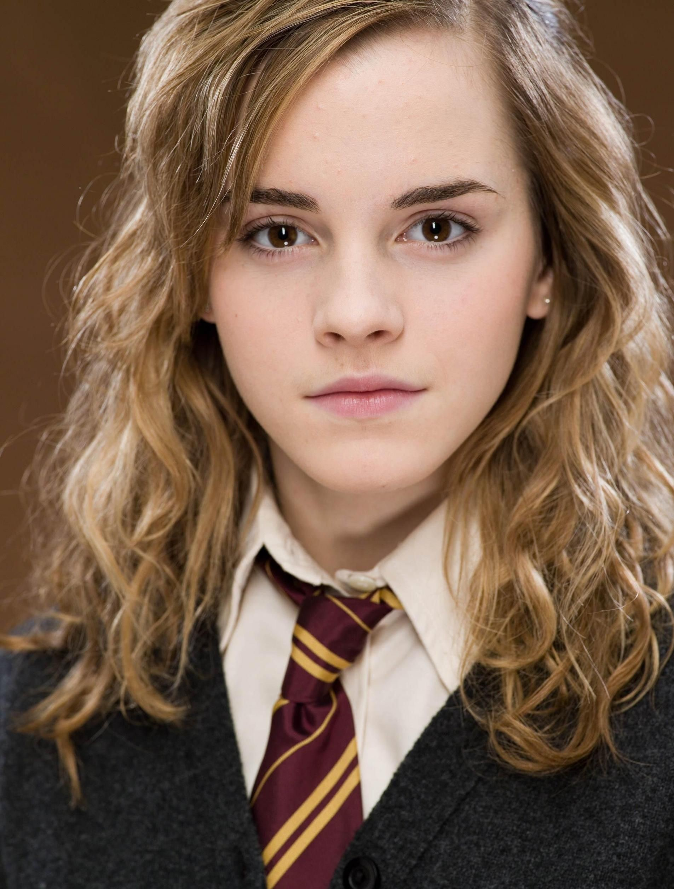
Emma Watsonová, celým jménem Emma Charlotte Duerre Watson, je britská herečka a modelka, která ztvárnila roli Hermiony Grangerové ve postavaové sérii Harry Potter o bradavickém kouzelníkovi.Narodila se v Paříži anglickým právníkům Chrisovi a Jacqueline Watsonovým. Její babička je Francouzka. Po rozvodu rodičů od pěti let žije se svou matkou a bratrem v Oxfordu v Anglii. Od útlého dětství se projevoval její zájem o herectví, a proto vystupovala v řadě divadelních představení, ve školních hrách, v sedmi letech vyhrála recitační soutěž. Její první postavaovou příležitostí se stala role Hermiony Grangerové ve postavau Harry Potter a Kámen mudrců ve věku jedenácti let.Od roku 2009 studovala anglickou literaturu na Brownově univerzitě v Providence na Rhode Islandu v Nové Anglii. Vedle toho začala studovat i psychologii a filosofii. Dne 25. května 2014 odpromovala. Během studií absolvovala roční studijní pobyt v Oxfordu.
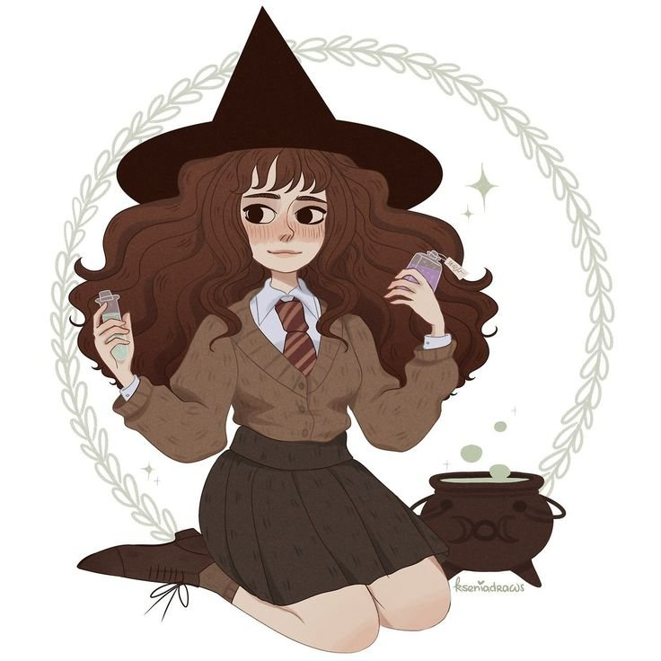
fiktivní postava a jedna z hlavních postav série knih Harry Potter spisovatelky J. K. Rowlingové.
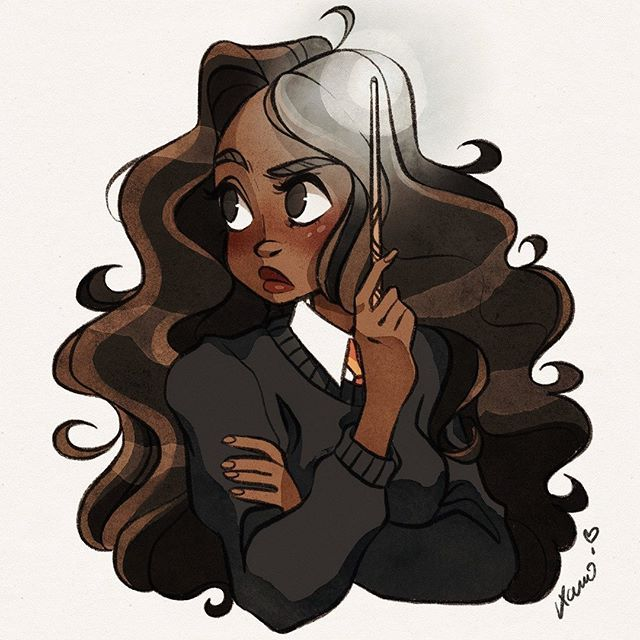
Hermiona popisována jako dívka, která má „husté, střapaté hnědé vlasy a dost velké přední zuby“
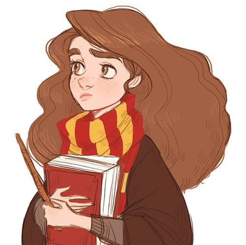
Je nejlepší studentkou ročníku a velmi schopnou čarodějkou
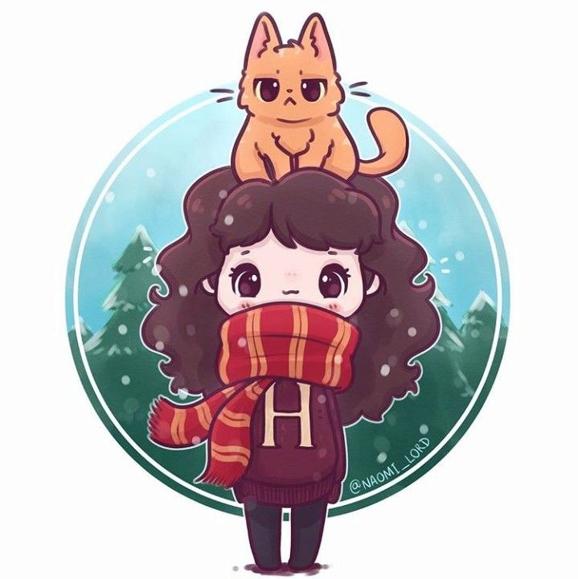
Jejím domácím zvířetem je Křivonožka, kříženec kočky s maguárem.
Hermiona se poprvé objeví ve Spěšném vlaku do Bradavic, když se při pátrání po žabákovi Nevilla Longbottoma Trevorovi dostane do kupé, kde je Ron a Harry.
Později Hermiona zjistí, že netvor v Tajemné komnatě je bazilišek, ale ten ji napadne právě, když to chce oznámit ostatním. Hermiona ale použila zrcátko, a tak nezemřela, ale pouze zkameněla.
O prázdninách si Hermiona koupí kocoura Křivonožku, kterého nemůže Ron snést, protože neustále útočí na jeho krysu Prašivku.
Spolu s Weasleyovými a Harrym jde Hermiona na mistrovství světa ve famfrpálu.
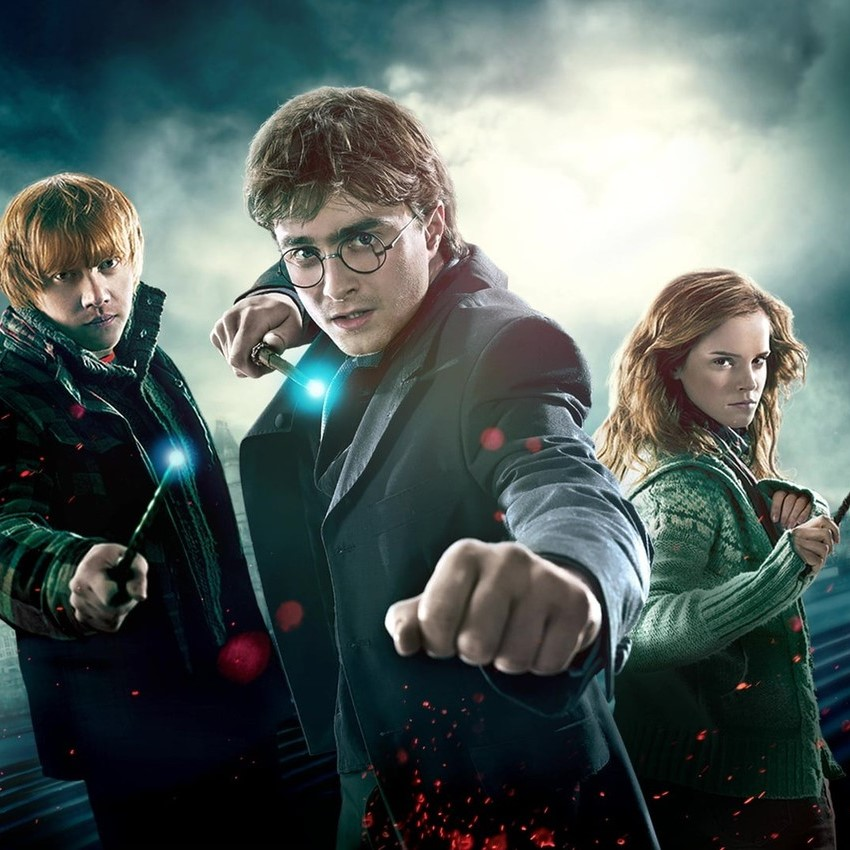
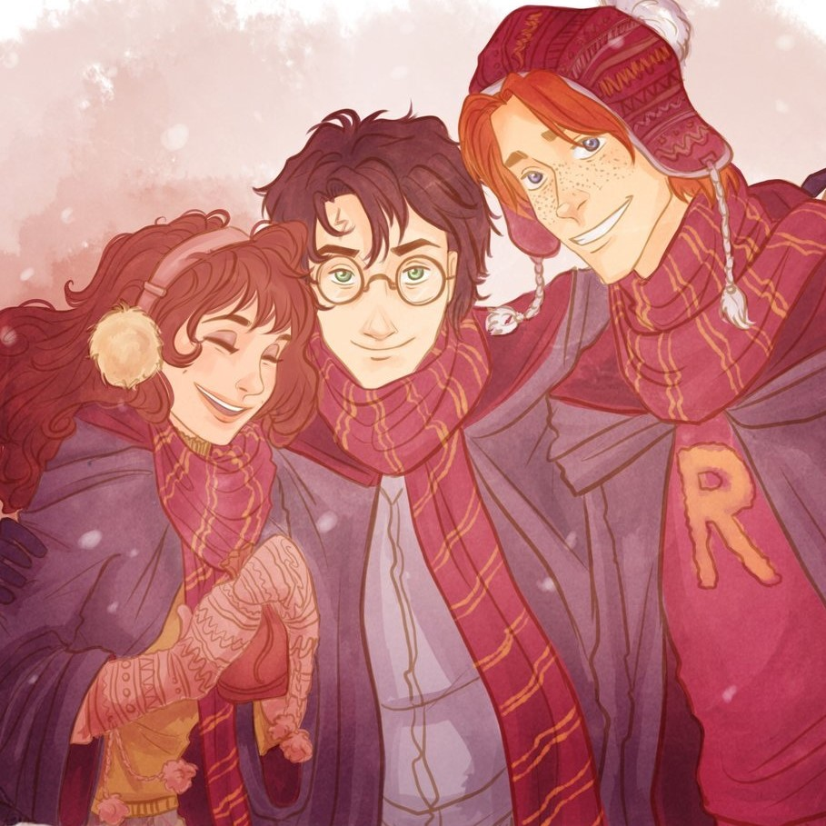
V knize Hermiona není dokonalá, jak bylo ukázáno ve filmu. Ona je
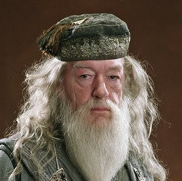
Zvědavost není hřích, Harry
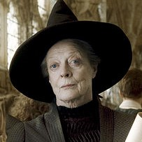
Pokud se nezeptáš, nikdy to nezjistíš.
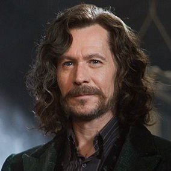
Pokud víš, stačí se jen zeptat.
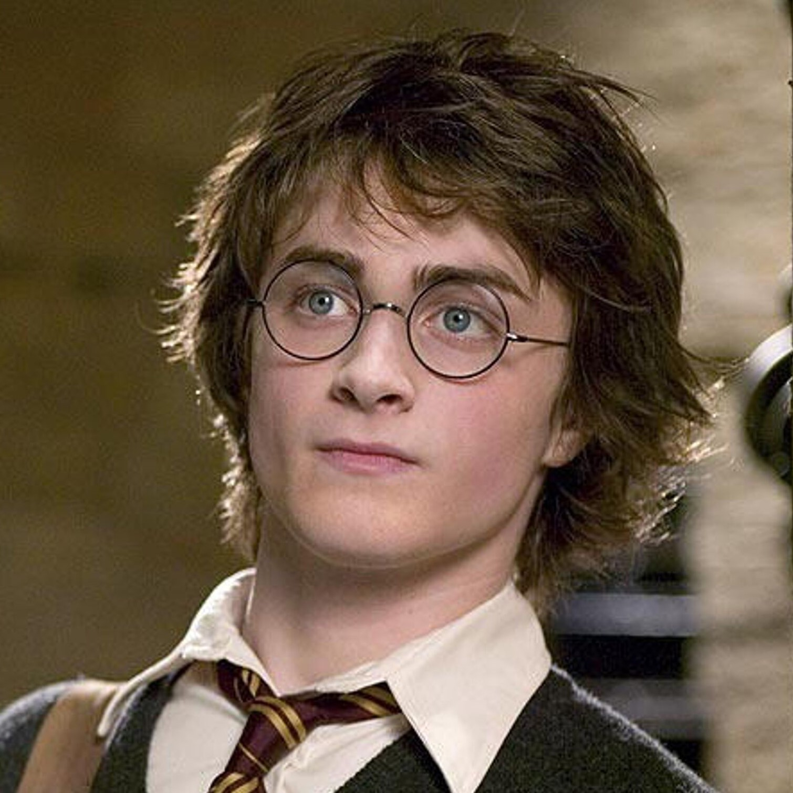
Čas je úžasná věc.
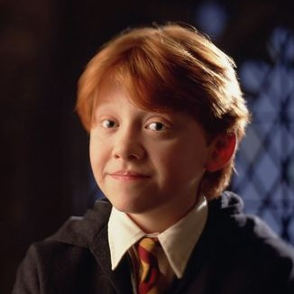
Proč hledat toho, kdo tě chce zabít?